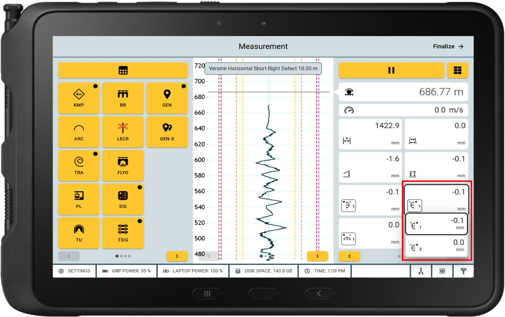

Portfolio
Projects
Products and platforms I've contributed to across enterprise software, media, logistics, sustainability, and pharma.

01 — Enterprise Software
Amberg Track Pro — Railway Inspection Platform
Part of the core team from Sprint 1, contributing to the complete product lifecycle of a safety-critical railway inspection desktop application. Defined workflows and user stories for a chromium-based app installer built using Advanced Installer bundling Erlang OTP, RabbitMQ, .NET (Kestrel), Redis, Node.js, and MongoDB, ensuring EN-13848 standard compliance.
Jul 2021 – Jun 2024
🍽
02 — Platform · CMS
CMS for SV Group — Europe-wide Restaurant Chain
Led business analysis for a centralised Content Management System managing menus and content for 100+ restaurant outlets across Europe. Designed role-based permission matrices for marketing managers, branch managers, and editors. Enabled real-time microsite generation and deployment for individual outlets.
Jul 2022 – Jun 2023
♻️
03 — Sustainability Tool
SV OTW — Sustainability Management Tool
Analysed and designed an internal web-based tool to track and evaluate daily food purchases and wastage across outlets. Enabled branches to log sustainability activities and generate reports aligned with SV's corporate responsibility goals.
Oct 2022 – Jan 2023
📺
04 — OTT / Media
Toffee Star Search — Banglalink OTT Platform
Gathered and documented requirements for the Toffee Star Search microsite supporting Banglalink's entry into the UGC space. Delivered support for multilingual content, SEO optimisation, and leaderboard integration for user-generated content.
May 2022 – Jul 2022
🔧
05 — SaaS Platform
Repair Management Platform — Service7000 AG
Spearheaded business analysis for a repair and service request management system for tenants, caretakers, and apartment owners. Evaluated and optimised a non-scalable route optimisation algorithm originally developed by a university faculty to support real-world deployment for scalable multi-route scheduling.
Dec 2022 – Jun 2024
🏛
06 — Professional Certification Platform
Swiss Leaders (SKO) — Professional Exams Platform
Contributed to a digital platform for Swiss Leaders (formerly SKO — Schweizer Kader Organisation), Switzerland's leading professional association for managers and executives since 1893 with 10,000+ members. The platform supports their professional certification and leadership examination processes for Swiss executives, covering areas such as leadership competency assessment, career development, and professional qualification tracking for Swiss managers across industries.
2021 – 2024
🚚
07 — B2B SaaS · Logistics
Last-Mile Distribution Application
Field Information Solutions Ltd.
Developed features for a B2B SaaS application ensuring last-mile distribution across Bangladesh. Identified potential customers, facilitated onboarding, communicated with end users to identify pain points, and groomed product backlog for sprint readiness.
Apr 2020 – Jul 2021
💊
08 — Pharma · Sales Operations
Sales & Distribution Operations — AKS Khan Pharma
AKS Khan Pharmaceuticals Ltd.
Managed sales operations across 13 outlets nationwide with 150+ employees. Analysed product portfolios evaluating growth trends and overhead costs, monitored customer tracking metrics, and coordinated distribution channel strategies across Bangladesh.
May 2018 – Mar 2020